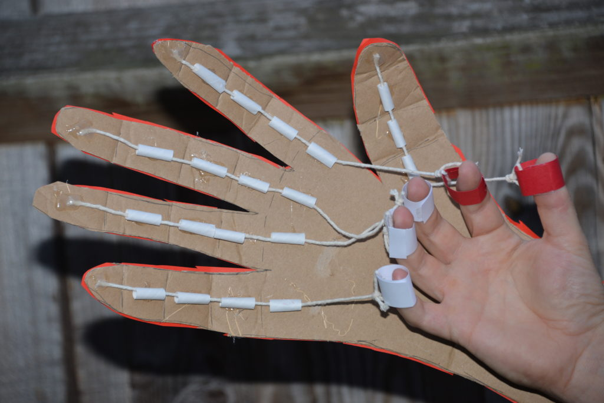

Aren's Website

NGC_4414 Nebula
I fell behind in a lot of stuff and I am trying to catch up
I was in a group that made a Rube Golberg on Thinker CAD
My group made the Rube Goldberg progect and I help hold cardbord in place.
<I with some one else dissection a computer.
My partner and I made a prostedic hand made of cardbord the goal to grab a water bottle
me and my group made lanched bottel rocets we put coc cola labe on it and I thount rockets would go more forwd
When we hit the material it was solid, but when we put hand in it was liquid. We need to play with it to have right texture. My team made dark green color. It was interesting
Multiple weeks we worked on moustrap car. The mousetrap car needs to move from one place to another by using the force of the rope that is revolving around the skewer of the CD. First we worked on design in google documnent. After two weeks we started building the car and first testing was fine, the car moved about 15 inches.
Two weeks we work on the egg drop project. First we made design and identified materials needed. We used straws and cotton balls to protect egg when it hits the floor. Second week we finished the project, but unfortunatly the egg broken.
Our group members build two paper airplanes. The plain worked fine, but other groups plains worked better..
We need to make boat that can go and float on the water. Our group had two iterations. First we took a half cup and put pieces of the popsicle stick under. The boat float 90 cm. Second boat we make for cardboard
The second boat that we designed has main rectangle and one end is half-circle. I watched what my teammates did. The half-circle end for front end we think will help to turn the boat easily. One mistake from our team was that we did not considered that we need to be in the boat. The boat did not went from one point to other. Our boat sank. It was fun expecienc.